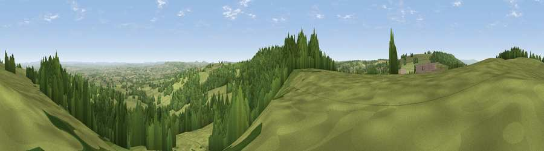

Viewpoint near Buckland St. Mary
#8788 in England · top 19% of its area beats it · near Buckland St. MaryThe view, rendered

A 360° render of this exact spot computed from the terrain model, tree cover and land cover — summer colours, afternoon light, calibrated against photographs of famous viewpoints. Real trees, hedges and buildings will differ in detail.
The panorama
Grey silhouette: terrain skyline in each direction (720 bearings, Earth curvature and refraction included). Dashed green: skyline with trees (+15 m) and buildings (+8 m) as obstacles. Blue strip: how far the ground is visible on each bearing.
Where the view opens
Wedge length = distance to the farthest visible ground on that bearing (vegetation-aware). Rings at 10, 25 and 50 km.
What fills the view
55% grassland · 40% woodland · 4% cropland
Angular shares of the visible panorama (visual magnitude), not map area. Landscape diversity 0.37 (0–1 Shannon).
Key numbers
More beautiful places nearby
The staircase of upgrades: each row has a higher view potential than everything closer. Driving times are estimates from straight-line distance, calibrated against real road routing — check an actual route before setting out.
| Place | Direction | Drive | Score |
|---|---|---|---|
| Viewpoint near Buckland St. Mary | NNE · 1 km | ~3 min | 72.2 |
| Viewpoint near Buckland St. Mary | N · 1 km | ~3 min | 77.3 |
| Viewpoint near Hewish | ESE · 14 km | ~25 min | 78.5 |
| Lambert's Castle Hill | SSE · 19 km | ~32 min | 78.7 |
| Viewpoint near Burstock | SE · 19 km | ~33 min | 81.8 |
| Cothelstone Hill | NNW · 20 km | ~34 min | 82.1 |
| Lewesdon Hill | SE · 21 km | ~35 min | 83.3 |
| Viewpoint near West Bagborough | NNW · 22 km | ~36 min | 84.3 |
50.92798, -3.03119 · source: screening · position refined by local search. Computed location — check access rights before visiting.